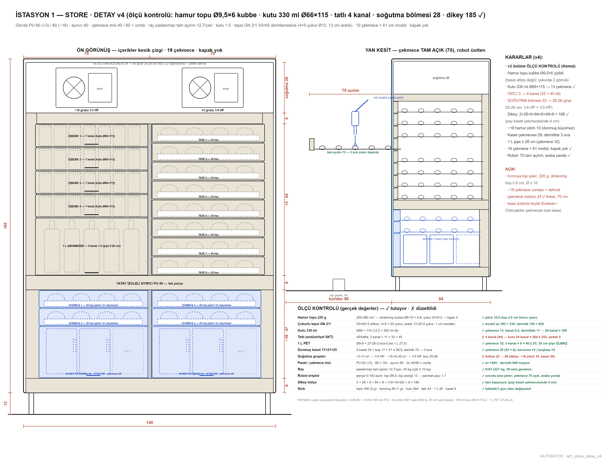

Dükkânın 3 günlük tüm soğuk stoku tek kasada: hamur topları, içecek, tatlı ve donmuş TOPPING kapları. Hamur mahalle fırınından hazır gelir (220 g), yoğurma yok. Tam çekmeceli kapaksız kasa; robot çekmeceyi pençeyle çeker. Modelin altındaki çubuktan kesit alabilir (X/Y/Z) ve iki noktaya tıklayıp ölçü çıkarabilirsin.
sürükle: döndür · üstüne gel: birim · çift tıkla: aç · alttan kesit + ölçü
22 EYLÜL 2026 · MODEL GÜNCEL, METİN ESKİ
Yukarıdaki 3B model HAT v19'a göre güncel. Bu istasyonun birimleri henüz ölçü kutusu — sırası gelince gerçek üretim modeline çevrilecek (örnek: 3 · TOPPING).
Aşağıdaki açıklama metinleri 14 Eylül'ün 4200 mm'lik tepsili hattından kalmadır, güncel değildir.
3B model — çekmeceye tıkla
Dolabın SolidWorks modelinden basitleştirilmiş görünüm. Çekmecenin üstüne gelince kırmızı olur; tıklayınca çekmece tahrik sistemi sayfası açılır.
1 · Ne yapar · çalışma senaryosu
Tedarik: fırıncı sabit takvimle 3 günde bir gelir (örn. Pzt + Per). Teslimat ≈ 240 top = 160 taze + 80 donmuş; teslimatçı dolu çukurlu tepsileri kızaklara sürer, boşları alır (tepsi takası — dükkânda dolum işi yok, ~10 dk).
Üst bölüm +3 °C: sol modül 4 içecek çekmecesi (7 kanal) + 1 L çekmecesi; sağ modül 8 taze hamur çekmecesi (20 top, çukurlu tepsi GN 2/1 53×65, çukur Ø12).
Alt bant −18 °C: sol modülde klapeli KASET KATI (4 donmuş TOPPING kabı 14×68×24, robot çatalla önden alır — v5 önerisi), altında 4 donmuş hamur çekmecesi (20 top). Donmuş top 3. günün deposu + sigortadır.
Sipariş anı: robot taze çekmeceyi 70 cm tam açar, pençeyle topu alır, PRESS’e götürür. Kol dolabın içine hiç girmez, üstten alır.
Gece: min-max kuralı — dolaptaki hazır stok önümüzdeki ~20 saatin tahmini satışının altına inince kol boş anda donmuş parti indirir; inen top "çözülüyor" etiketi alır, 8–12 saat dolmadan prese gönderilmez (çözülme bekçisi).
Eleman: haftada 1 içecek/tatlı ve donmuş kapları sürer; teslimat günü kasaları tepsilere dizer.
2 · Özellikler · karar özeti
Soğutma2 grup: −18 (1/3 HP) ve +3 (1/4 HP), bölme 28, üstten servisTahrikher çekmecede 24 V redüktörlü motor + kayış, ana PC → PLC → röle; detay sayfası →Çekmeceler17 çekmece + 1 klapeli kaset katı; PU 60/80, ray 12,7, 70 cm tam açılım; kapak yok, raf başına tek 24 V itici (top başına motor/sensör yok)Kaset katı (v5)z 40–69 sol modül: 4 kap 14×68×24 yan yana (4×14 + 3×1 + 0,5 = 59,5 ✓), L raf, klape 6Kapasitetaze 8 × 20 = 160 top (1.–2. gün) · donmuş 4 × 20 = 80 top (3. gün + sigorta) · içecek ≈ 110 kutu (kanal + yaylı market iticisi) + tatlı ≈ 16 + 1 L ×8Hamur220 g, Ø9–10 cm; fırıncıya tek şart az mayalı yoğurma72 saat kuralıtaze top buzdolabında en fazla 72 saat (soğuk fermantasyonun tatlı noktası); donmuş top haftalarca — donma sayacı durdurur, çözülme kaldığı yerden devam ederFIFOtakip birimi ÇUKUR: her çukurun adresi (A1, B3…) ve damga saati yazılımda; alma oku en eskiyi, koyma oku sıradaki boşu gösterir — fiziksel düzen = yaş düzeniEnvantergöz sensörü YOK (~270 nokta = kablo + arıza): kayıt defteri (her hareket robotta damgalı) + alma anında bilek kamerası doğrular (0,2 sn)Sipariş miktarıson 3 günün ortalaması × 3 gün × 1,15 pay − eldeki stok; 4–6 haftada gün katsayıları oturur; öneriyi sistem verir, kararı insan onaylarSüre bekçisi60. saati geçen toplar → kioskta "günün pidesi" indirimi; 72. saat çöp + sayaç. Beklenen fire %3–5İnsan işi3–4 günde bir 10 dk kasa dizme + haftalık ikmal; günlük temizlik ayrı
3 · Teknik resimler

STORE v4 — alt buzluk 6 çekmece, tam çekmeceli kasa (4 Eyl 2026)